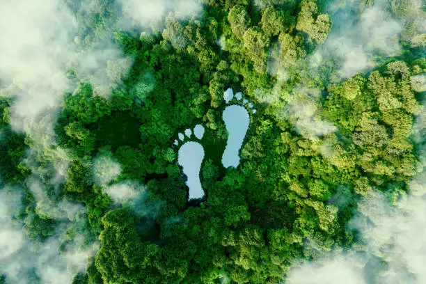
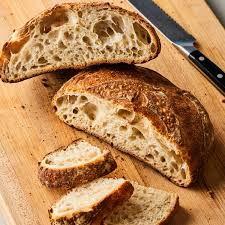

Urban Photography - Elena RoyPosted on 23/12/2024 at 7:43 AM

In the heart of bustling metropolises, urban photography captures the essence of city life. From the interplay of light and shadow among skyscrapers to the candid moments of street life, every frame tells a story. The key to mastering urban photography lies in patience, perspective, and the ability to find beauty in the ordinary. Whether you're shooting at golden hour or exploring nighttime cityscapes, the urban environment offers endless opportunities for creative expression.
Sustainable Living - Marcus ChenPosted on 14/11/2024 at 2:23 PM
Making the switch to a more sustainable lifestyle doesn't require a complete life overhaul. Simple changes in our daily routines can contribute significantly to environmental conservation. From reducing single-use plastics to implementing energy-saving practices at home, every action counts. This guide explores practical steps anyone can take to live more sustainably while maintaining modern comforts.
Plant-Based Cooking - Sara WilliamsPosted on 10/11/2024 at 5:00 AM

Plant-based cuisine has evolved far beyond simple salads and steamed vegetables. Today's plant-based cooking incorporates global flavors, innovative techniques, and creative ingredient substitutions to create dishes that are both nutritious and satisfying. Whether you're a committed vegan or simply looking to incorporate more plants into your diet, the world of plant-based cooking offers endless possibilities for culinary exploration.
Digital Minimalism - James NortonPosted on 30/10/2024 at 5:00 PM

In an age of constant connectivity, digital minimalism offers a thoughtful approach to technology use. This philosophy isn't about rejecting modern tools, but rather about being intentional with how we engage with them. Learn how to create healthy boundaries with technology while still leveraging its benefits for productivity and connection.
Adventure Travel - Maya PatelPosted on 25/10/2024 at 2:06 AM

Adventure travel isn't just about extreme sports and challenging expeditions. It's about stepping outside your comfort zone and experiencing destinations from a new perspective. From hiking hidden trails in South America to exploring remote villages in Southeast Asia, discover how to plan meaningful adventures that go beyond typical tourist experiences.
Sourdough's science - Thomas BakerPosted on 22/10/2024 at 7:30 PM
Sourdough bread making is both an art and a science. Understanding the biology behind fermentation and the chemistry of gluten development can help bakers create better loaves. This deep dive into sourdough science explores the fascinating world of wild yeast, bacteria, and the complex processes that transform simple ingredients into delicious, nutritious bread.
Modern Dance - Lisa ChangPosted on 22/10/2024 at 6:06 PM

Modern dance offers a unique approach to movement that combines physical exercise with emotional expression. Unlike traditional dance forms, modern dance emphasizes personal interpretation and natural movement patterns. Discover how this art form can improve body awareness, emotional well-being, and creative expression, regardless of your dance experience.
Build a Smart Home - David KumarPosted on 12/10/2024 at 8:05 AM

Creating a smart home doesn't have to be overwhelming or expensive. Starting with basic devices like smart lights and thermostats, you can gradually build a connected home that enhances comfort and efficiency. This guide covers essential considerations for beginners, from choosing compatible devices to setting up basic automation routines that make daily life easier.